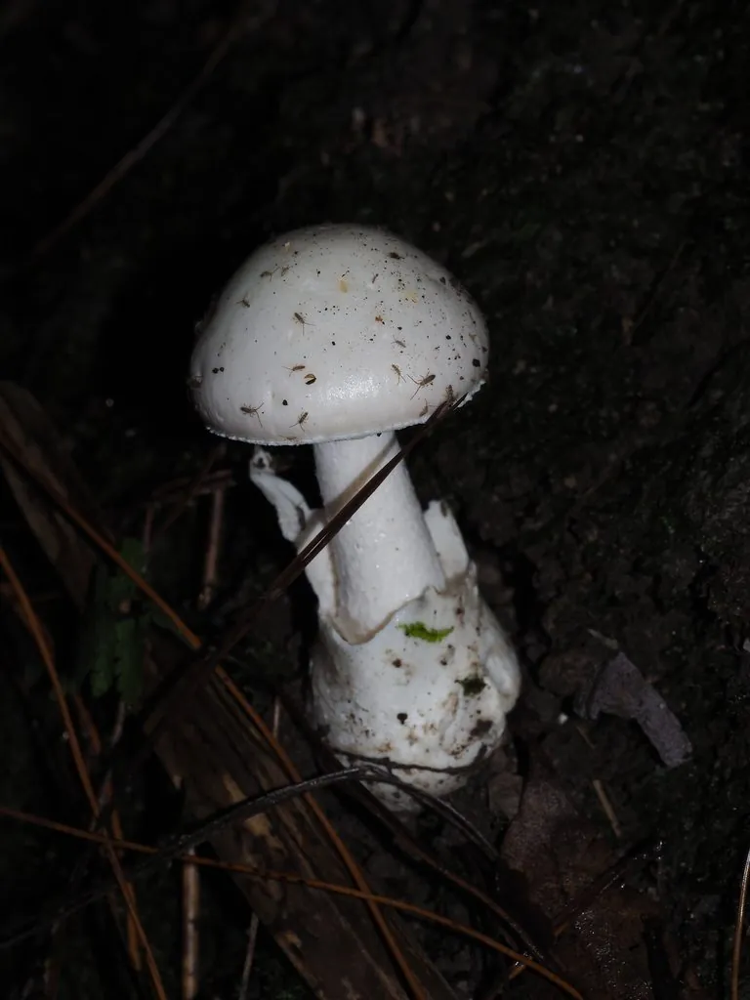

真菌 · 真菌界
致命鹅膏 Amanita exitialis

鹅膏科蘑菇，通体白色、菌柄有菌环与菌托，含鹅膏毒肽，属剧毒菌，误食可致肝衰竭死亡，严禁采食。
- 分类
- 门担子菌门纲伞菌纲目伞菌目科鹅膏科属鹅膏属
- 栖息环境
- 中国南方阔叶林地上，与黧蒴等树木形成外生菌根
- 地理分布
- 中国广东、广西、云南等地，华南亚热带阔叶林特有种
- 保护级别
- 暂无评估；分布区狭窄，应避免破坏其林地生境
物种志
致命鹅膏的子实体中等，菌盖直径 4–10 厘米，初期半球形，后平展，表面纯白色，光滑，有时中央微带淡黄。菌肉白色。菌褶白色，离生，密集。菌柄长 6–12 厘米，直径 0.8–1.5 厘米，白色，上部有白色膜质菌环，基部膨大并具白色袋状菌托。孢子印白色，孢子近球形。
致命鹅膏是中国南方（尤其广东）春季至初夏生于阔叶林地上的剧毒菌，与黧蒴等树木形成外生菌根。它含有鹅膏毒肽，属剧毒菌：误食后潜伏 6–24 小时，先出现呕吐腹泻，随后进入假愈期，数日后暴发急性肝衰竭，病死率极高。它通体白色，与可食的白色口蘑、白蘑菇容易混淆，是华南地区蘑菇中毒死亡的主要元凶之一。识别要点是“头上戴帽（菌盖）、腰间系裙（菌环）、脚上穿靴（菌托）”，三者俱全的白色蘑菇绝不可食。
形态与习性
- 菌盖直径 4–10 厘米，纯白色，光滑
- 菌褶白色，离生，密集
- 菌柄长 6–12 厘米，有白色菌环与袋状菌托
- 孢子印白色，孢子近球形
- 毒性含鹅膏毒肽，可致急性肝衰竭死亡，严禁采食
- 识别通体白色，兼具菌环与菌托，切勿采食
趣味知识
- 致命鹅膏是中国华南地区蘑菇中毒死亡的头号元凶，通体雪白极具欺骗性。
- 它的识别口诀是“戴帽、系裙、穿靴”：菌盖、菌环、菌托三者俱全。
- 误食后先吐泻、再假愈、最后肝衰竭，病程凶险，病死率高。
- 它与可食的白色口蘑外形接近，但口蘑无菌环、无菌托，务必分清。